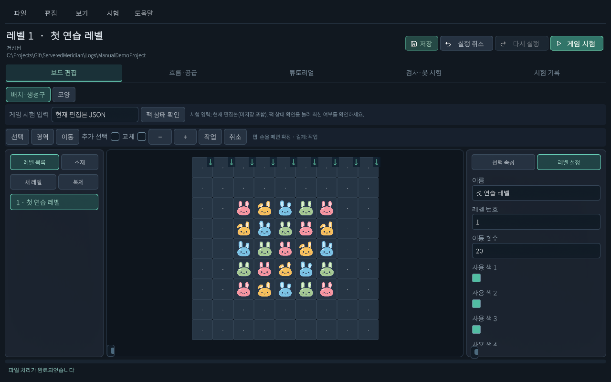

추가 · 현재 씬 기반 레벨툴
화면과 첫 편집
버튼 위치를 익히고 블록 하나를 놓아 보세요.
기준2026.10.15 현재 UI · Windows / Android 레벨툴
레벨툴 화면 열기
- Windows에서는 게임 앱과 별도인 레벨툴 앱을 실행합니다. Unity에서 확인할 때는 Assets/Scenes/LevelTool.unity 씬을 열고 Play를 누릅니다.
- 기존 작업이 열리면 제목과 폴더를 봅니다. 복구 질문은 복구 안내를 참고하세요.
- 작업이 없다면 새 프로젝트를 만들거나 ZIP을 가져옵니다.
어디에 무엇이 있나요?

| 위치 | 항목 | 하는 일 |
|---|---|---|
| 맨 위 | 파일 / 편집 / 보기 / 시험 / 도움말 | 파일 전달, 복사·붙여넣기, 화면 보기, 검사, 단축키 |
| 제목 오른쪽 | 저장 / 실행 취소 / 다시 실행 / 게임 시험 | 자주 하는 작업. 제목 아래에 저장 상태와 작업 폴더 표시 |
| 가운데 위 | 보드 편집 / 흐름·공급 / 튜토리얼 / 검사·봇 시험 / 시험 기록 | 작업 화면 선택 |
| 왼쪽 | 레벨 목록 / 소재 | 레벨 선택·새 레벨·복제, 배치 도구 선택 |
| 가운데 | 9×9 보드와 선택 / 영역 / 이동 / 교체 / 작업 | 요소 배치 및 여러 칸 편집 |
| 오른쪽 | 선택 속성 / 레벨 설정 | 배치 색·방향·선택 요소 또는 이름·번호·이동 횟수·사용 색 조정 |
| 맨 아래 | 상태 안내 | 저장 완료·입력 오류·취소 결과 |
처음 블록 놓아 보기
- 레벨 목록에서 편집할 레벨을 고릅니다. 새 레벨은 빈 레벨 추가, 복제는 현재 레벨 복사입니다.
- 소재 → 편집 층 → Block을 고릅니다. 층은 블록·장애물·덮개·바닥을 나누는 작업 구역입니다.
- 지정 달토끼 공급을 고릅니다. 선택 속성 → 배치 색에서 Type1 등 색을 고릅니다. 이 도구는 시작 블록의 색을 지정합니다.
- 보드의 빈 칸을 클릭하면 배치됩니다. 점(·)은 시작 배치가 없는 칸이며 게임에서 생성구를 통해 채워질 수 있습니다.
- 바꿀 도구를 고르고 같은 층의 기존 칸을 더블클릭하면 교체합니다. 터치는 교체 켜기 / 작업 → 현재 도구로 교체를 사용하세요.
- 칸만 고르려면 선택 또는 소재의 선택 도구로 돌아갑니다. 실수는 실행 취소로 되돌립니다.
- 레벨 설정에서 이름을 “첫 연습 레벨”, 이동 횟수를 20 등으로 입력합니다. 입력칸 밖을 눌러 확정하고 저장합니다.
수정한 레벨로 게임 시험하기
- 보드 위 게임 시험 입력 → 현재 편집본 JSON을 선택합니다. Android는 더보기 안에서 스크롤하여 찾습니다.
- 게임 시험(Android: 시험) 또는 Windows F5를 누릅니다. 현재 자료를 먼저 검사합니다.
- 오류가 나오면 고칩니다. 저장됐다고 플레이 가능한 것은 아닙니다. 미션·사용 색·배치·공급도 확인하세요.
- 게임 화면에서 교환해 봅니다. 시험 종료 후 편집 화면으로 돌아옵니다. 시험은 저장을 대신하지 않습니다.
Windows 단축키와 창 크기
| 기능 | 단축키 | 주의 |
|---|---|---|
| 열기 / 저장 / 사본 저장 | Ctrl+O / Ctrl+S / Ctrl+Shift+S | JSON 프로젝트 단위 |
| 실행 취소 / 다시 실행 | Ctrl+Z / Ctrl+Y 또는 Ctrl+Shift+Z | 글 입력 중에는 입력칸 동작 우선 |
| 복사 / 잘라내기 / 붙여넣기 | Ctrl+C / Ctrl+X / Ctrl+V | 선택한 현재 층 요소, 같은 편집 세션 |
| 현재 층 삭제 | Delete | 대상과 층 먼저 확인 |
| 보드 넓게 / 패널 복원 | Shift+Space | 보드에 포커스가 있을 때 |
| 게임 시험 / 단축키 안내 | F5 / F1 | 도움말 → 단축키 안내에서 검색 |
| 한 단계 취소 / 닫기 | Esc | 맨 위 메뉴·팝업 또는 현재 작업부터 처리 |
| 전체 화면 ↔ 창 모드 | Alt+Enter 또는 F11 | Windows 레벨툴 앱. Unity 창은 바꾸지 않음 |
창 모드는 16:10 비율, 최소 1280×800입니다. 테두리를 끌어 크기를 조절합니다. 전체 화면은 모니터를 채우고, 창 모드 복귀 시 마지막 저장 크기·위치를 사용합니다. 기록이 없으면 1280×800입니다. 최대화 모드는 제공하지 않습니다.
“편집 형식으로 전환”이 보이면
구형 레벨입니다. 보드·게임 시험은 미리 볼 수 있고 편집하려면 편집 형식으로 전환 (Undo 가능)을 누릅니다. 확인 후 저장하세요. 원본을 보관하려면 먼저 사본 저장합니다. 이는 레벨 내부 형식 전환이며 ZIP 가져오기와는 다릅니다.
변경 이력
| 변경일 | 변경 항목 | 이전 → 현재 | 이유 |
|---|---|---|---|
| 2026.10.15 | 현재 씬 레벨툴 안내 | 추가 · JSON·ZIP·터치 조작과 현재 화면 안내 | 현재 UI에 맞춘 초보자 설명 요청 |
설명 편집·화면 확인: 2026.10.15 · ServeredMeridian / Windows / Unity 6000.3.10f1.
Windows 씬 UI 캡처, 별도 연습 프로젝트 JSON 저장·재로드, 공통 ZIP 처리 왕복 문서 일치 확인. 모바일은 에디터에서 같은 UI를 모바일 배치로 표시했습니다. Android 실기기 터치·키보드·시스템 파일 선택과 Windows 시스템 파일 선택기 실제 조작은 이번 작업에서 확인하지 않았습니다. 브라우저 도구의 로컬 파일 접근 제한으로 넓은 화면·좁은 화면의 HTML 렌더링은 미검수입니다.